일촌 골학 2019 목요일
1. 골반뼈
1) Ischium
1.1 골반의 전반적인 구조 참고용

1.2 True pelvis(Lesser pelvis) 참고용
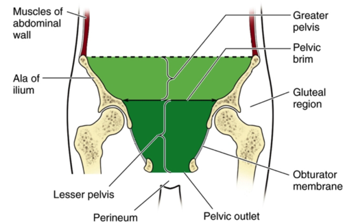
1.3 Ischial Spine
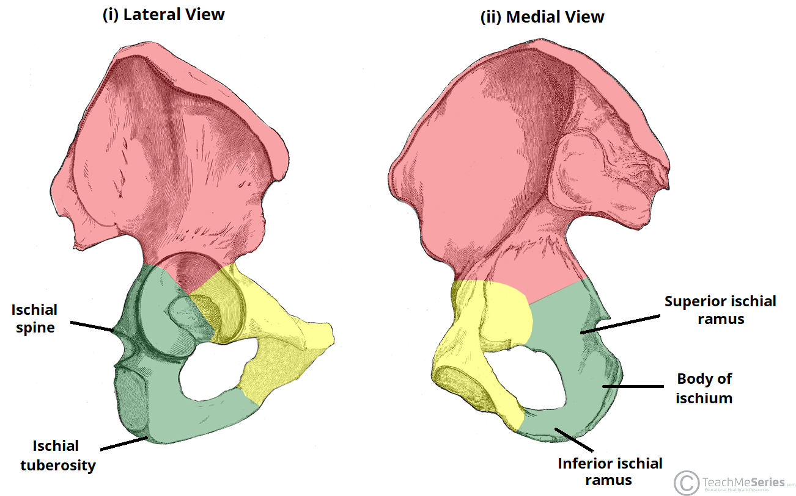
1.4 Sciatic Notch and Foramen
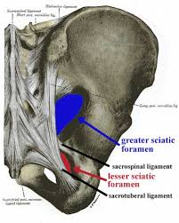
1.5 Schiatic Notch의 통과물들의 모습(보면 후회합니다)
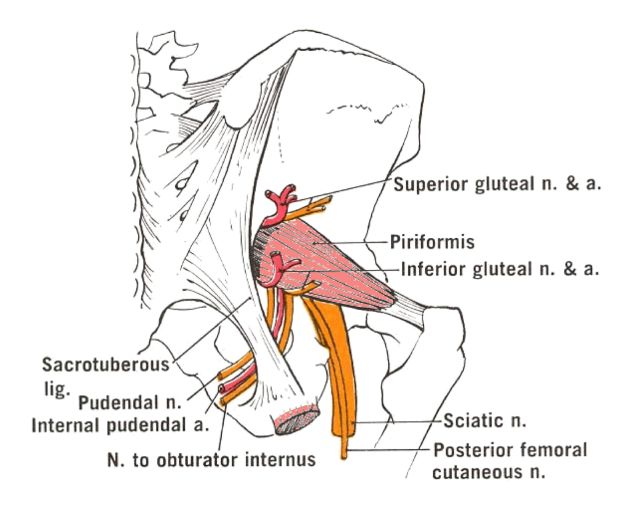
1.6 Obturator foramen
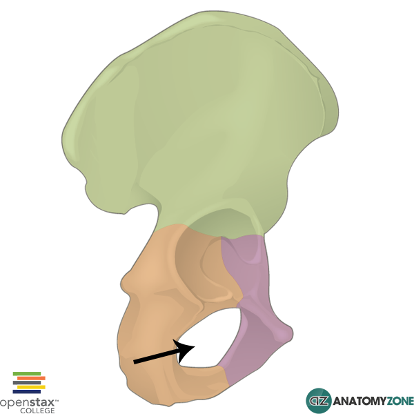
2) Pubis
2.1 Superior Ramus of Pubis(우측 골반을 가쪽에서 본 모습)
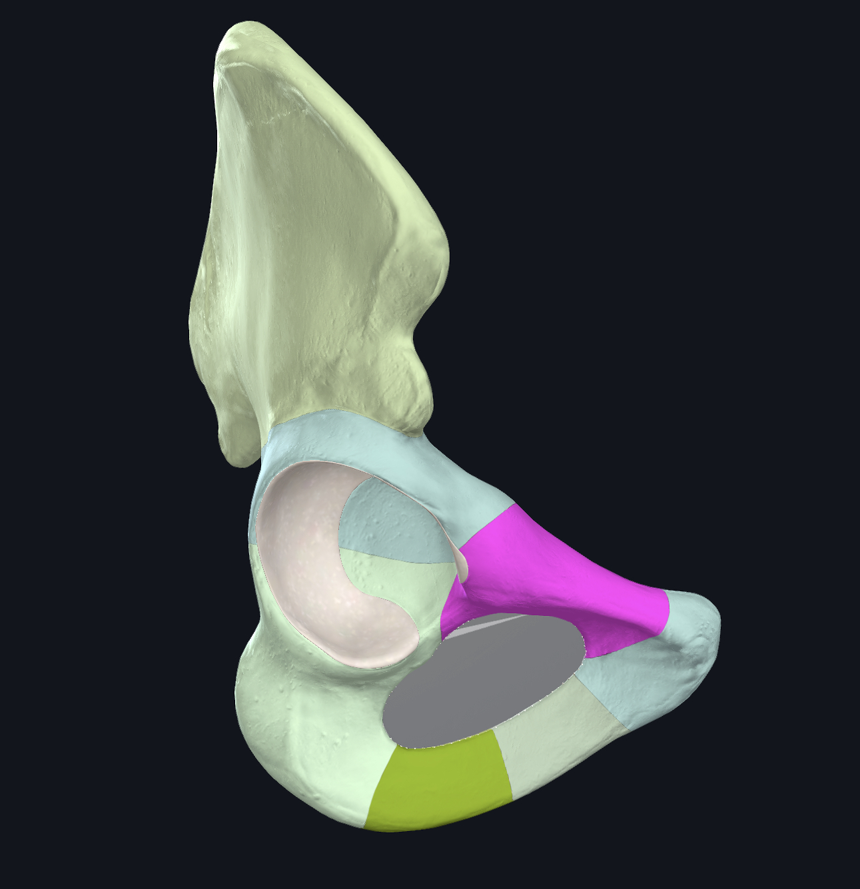
2.2 Superior Ramus of Pubis(우측 골반을 안쪽에서 본 모습)
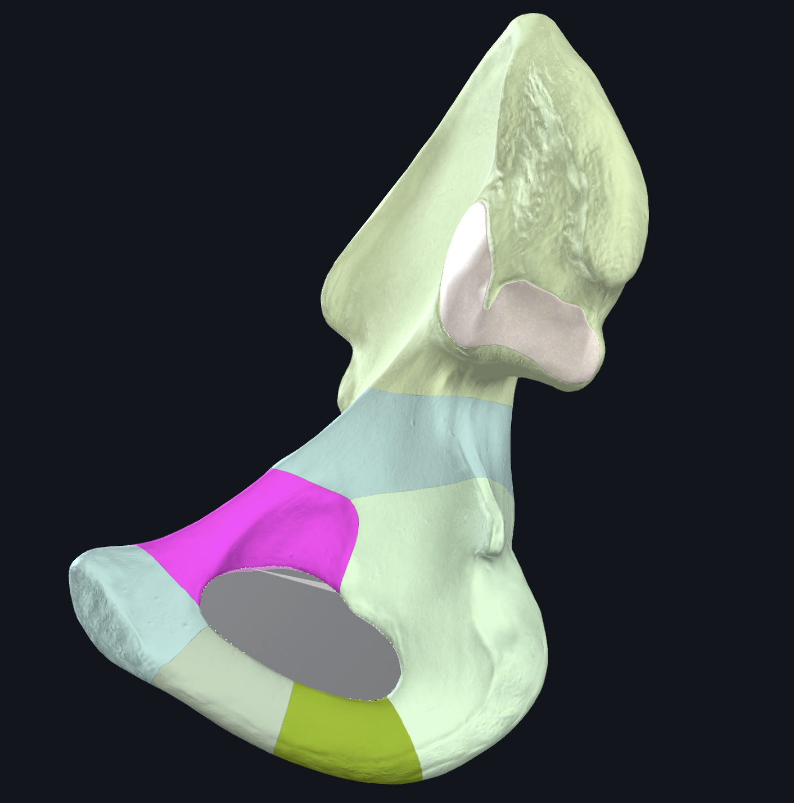
2.3 Pubic tubercle에 붙는 inguinal lig. 참고용
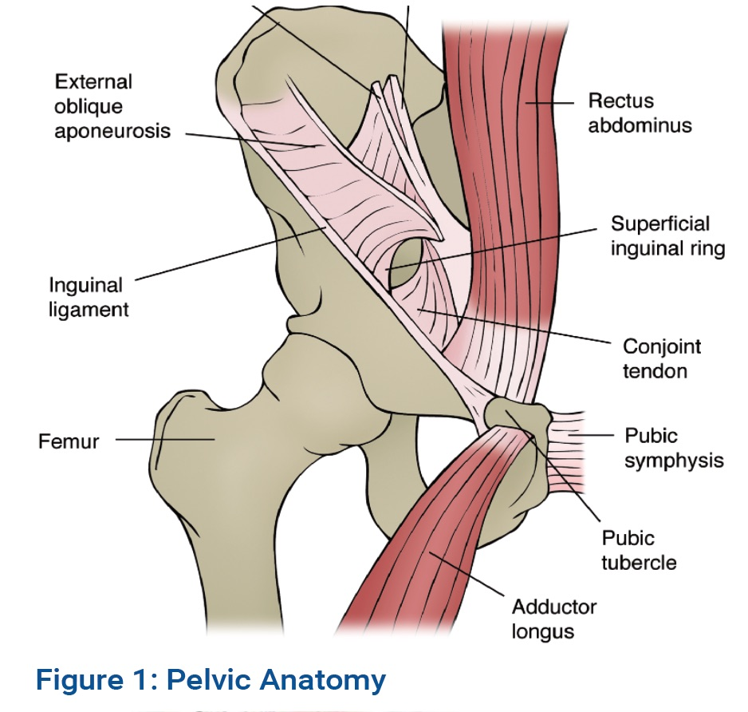
2.4 Pecten pubis, Pubic tubercle, Pubic crest.
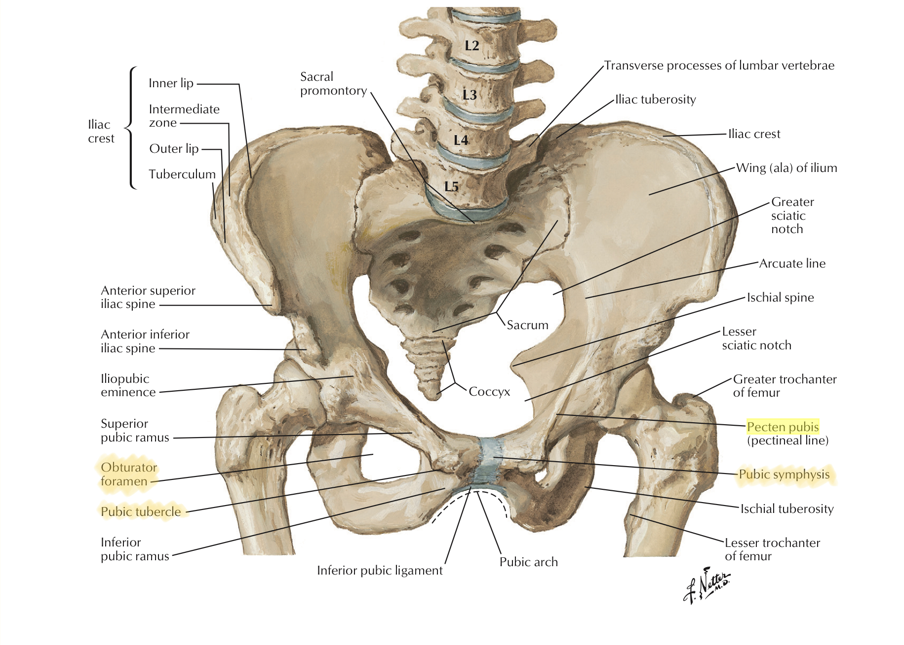
2.5 Pecten pubis, Pubic tubercle, Pubic crest 2.
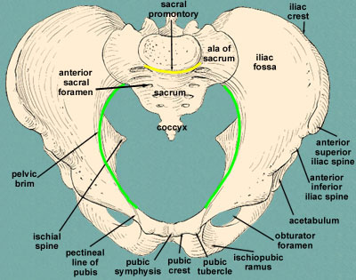
2.6 arcuate line of Ilium
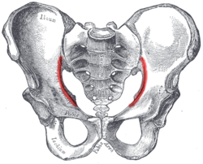
2.7 iliopectineal line(Ilium + pubis)
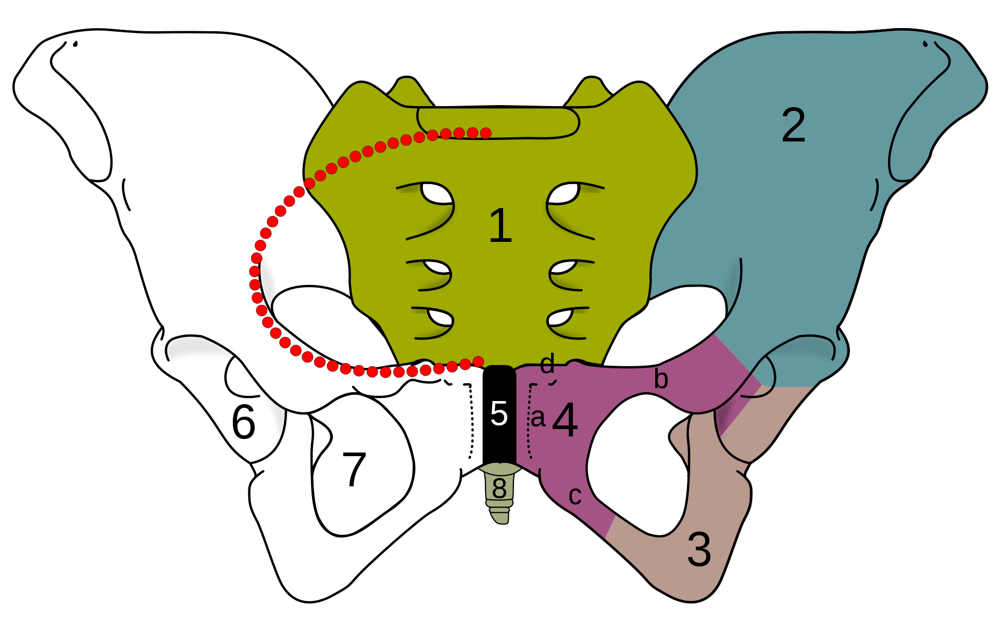
2.8 Inf. ramus 참고용
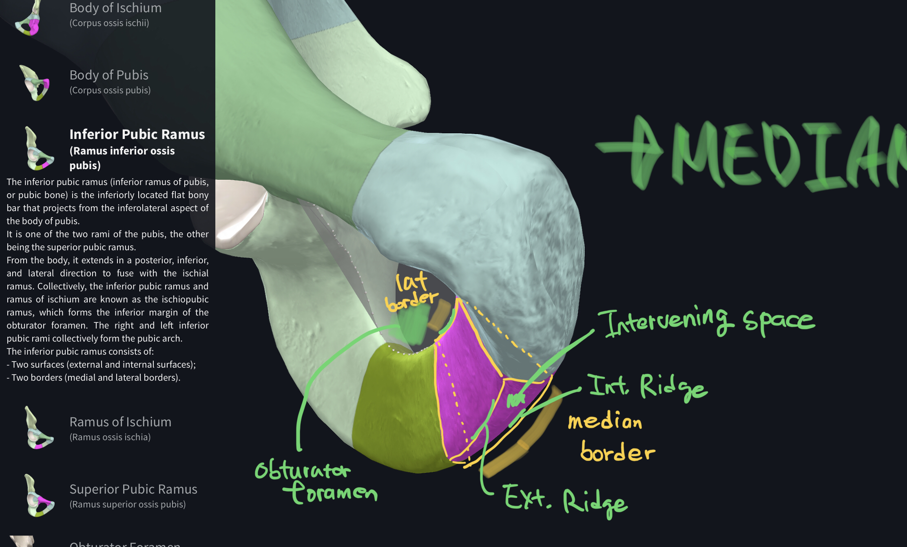
3) Bony Pelvis
2. 다리의 뼈
1) Femur
2) Tibia
3) Fibula
3. 발의 뼈
1) Tarsal bone 7개
2) Talus, Calcaneus